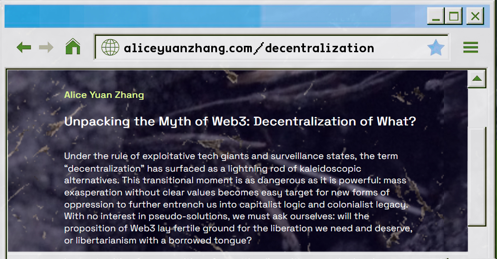
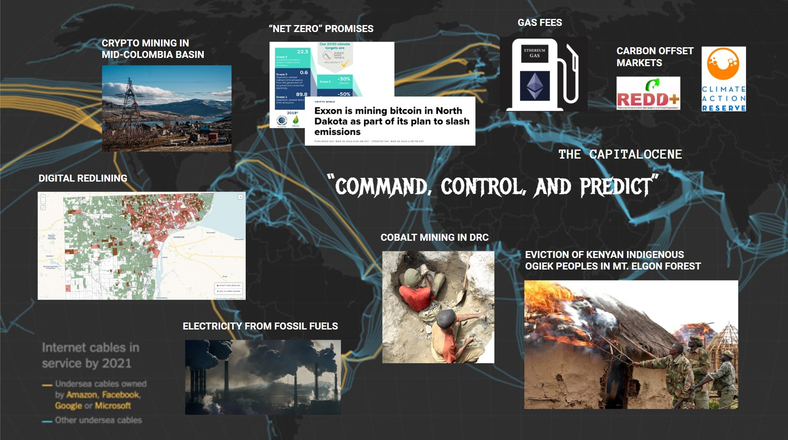
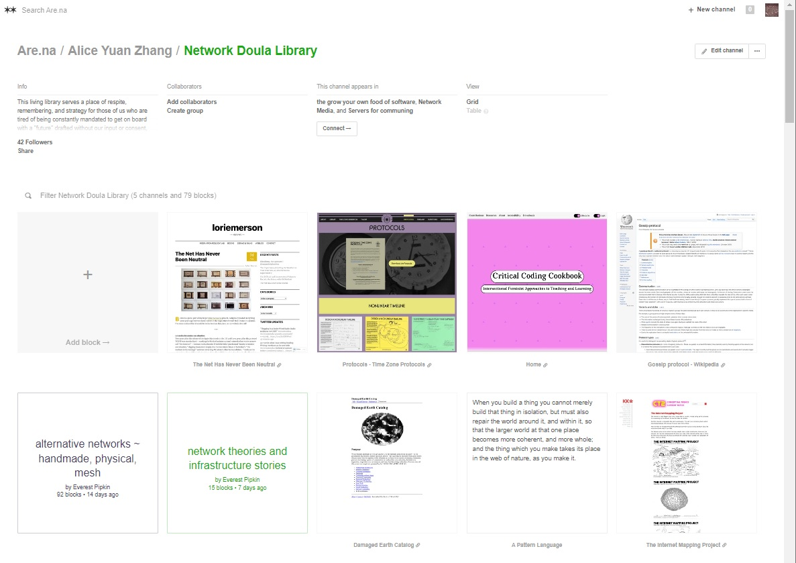
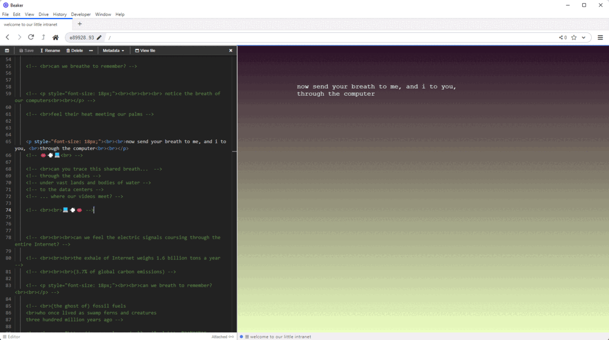
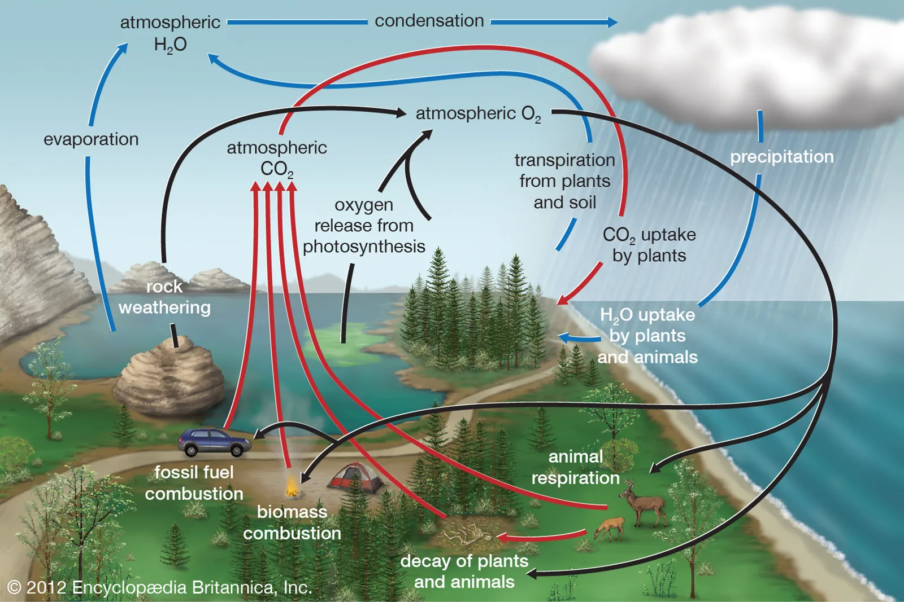
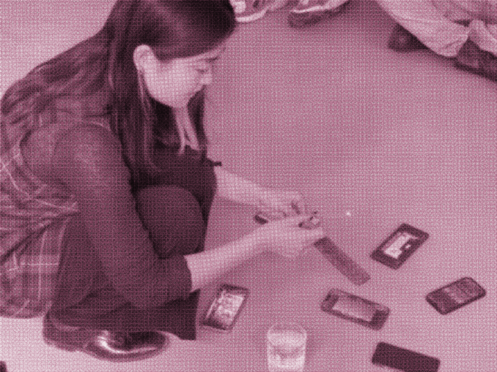
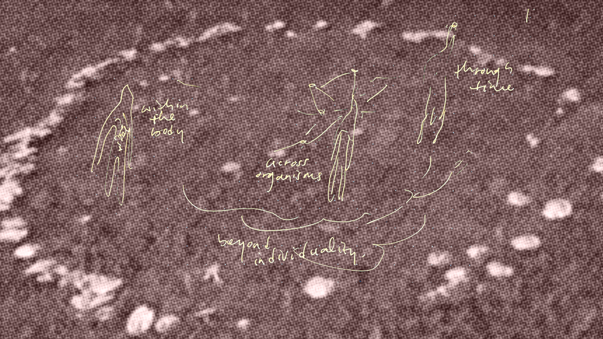

I wrote this critique while working as a research resident at 0x Salon / Trust Berlin in Spring of 2022.

In investigating the promises, technicalities, and cultural currents of blockchain, I found myself confronting the widespread neglect of the geopolitical realities undergirding technological innovation, as well as a troubling dependence on systems of machine prediction and organization to solve complex societal issues.
* *< Stream the podcast episode: SalonCast004: DAOcolonisation with Wassim Alsindi, Alice Yuan Zhang, Laura Lotti, and Ricardo Saavedra >
{ written on July 9th for forthcoming 0xSalon revue }

There is power in the obscurity of infrastructure as widespread yet mundane as the Internet. I can’t trace every component that makes possible the delivery of a signal from my fingertips to yours, or the hungry churn of our signals combined. These smooth surfaces belie an eeriness not unlike standard winds through a monocropped field.
All I know is the Metaverse is a place on Earth. Ursula K Le Guin debunks the dichotomy of high or low, defining technology as simply the active human interface with the material world. Jussi Parikka brings media into materiality to conceptualize “the wider geophysical life worlds that support organic life as much as the technological worlds of transmission, calculation, and storage.” Counter to what a culture obsessed with innovation and deliberately forgetful may suggest, everything that makes up this shiny sprawl has and always will exist. To ask where it comes from and where it will go is to reckon with unjust geopolitics.
Under the grasp of technocapital realism, the only sensible task may be to un-world. To decompose systems of sterility into a vital mess. As Tiqqun asserts in The Cybernetic Hypothesis, we fight opacity with opacity. And what better subversion than the spacious, illegible, relational affordances of grief?
If it’s geological, it’s grievable. Dilating the teachings of a Buddhist mother beyond samsaric hierarchies, I say ancestral work is simply the inquiry of relation. Grief is kinetic, a thread to pull on and watch all the parts unravel into ungovernable vulnerability. Ingredients to weave a resting place for the technological imaginary. Breath to expand our scope of concern. Supply chains, eroding into the possibility of some wounded kinship. Tears to conduct ions and eons alike – through them I see something beyond a future.
Panel discussion with Ela Kagel, Alice Yuan Zhang, Calum Bowden, and Elihu Ashong
Curated by Andrea Goetzke at re:publica 2022
A conversation in which I break down the foundational issues of Web3: inaccessibility, mining, falsity of carbon offsets, asset as identity, technocapitalism, and other symptoms of neocolonialist desire entangled with both the art and tech industries, and suggest alternative ways to organize and heal toward a more vibrant cultural economy.
For further reading: Consensus Building: The Clash Between Governance and Everyday Life, an interview between Nikiwe Solomon and Adrian Van Wyk
"Bureaucracy has no way of dealing with people; it is very cold, it has no soul, it has no creativity, it has no imagination. There is no bridge between the people and bureaucracy."

This living library serves a place of respite, remembering, and strategy for those of us who are tired of being constantly mandated to get on board with a "future" drafted without our input or consent, yet who know in our bodies and spirits of technologies far wiser than products of Silicon Valley. Not meant to be a parking lot of critique against the current systems (though ofc we must stay aware), this space is instead dedicated to the many other possible cosmologies of infrastructure so that we can expand our cultural imagination and empower collective agency.
In here you'll find readings, quotes, metaphors, memes, instructional manuals, spells, and recipes for bringing about alternative networks. Add your own resources - let's learn together!
Walk the Web! is an idea for a workshop and performance to unravel and reconfigure the Internet from a corporeal perspective. As the state of web is ushered into major shifts, how can we center our social and earthly needs rather than fall into deeper capitalist extraction? What does decentralization mean in context of local context, and how can a network take the shape of community?
Rather than engage from a purely theoretical or logical approach with these questions, this project makes space for vulnerability and solidarity.
The preparation of the performance would double as a process of hands-on learning and reflection, as participants literally unravel used digital infrastructure equipment to make into new communication costumes.
Then wearing these, we embody a web in motion through an interactive public procession in the streets, to broadcast our concerns and demands for the future of the Internet.

Grief protocols that Angeliki Diarouski (left) and I (right) brainstormed during Marloes de Valk's AMRO22 workshop
Can we breath into networked solidarity?
I brought this inquiry to my guest lecture at Melanie Hoff's Digital Love Languages class as part of School for Poetic Computation's Spring 2022 program, and invited shared breath as a medium to feel through the material components of Internet infrastructure that we currently depend on for virtual connection. The exercise was facilitated live through a website on Beaker browser, a decentralized tool for collective web hosting.

"this air carries nitrogen and oxygen, pollen and pollutant"
"... can you breathe deeply enough to sense its lineage?"
"... can you breathe deeply enough to remember?"

through breath we access cyclical time
AKA unhexing Simon Denny's class >:-)

As part of my guest lecture at HFBK, I facilitated a grief ritual to explore technological dependencies from a relational perspective. Together we sat in a circle around a simple altar comprising of water (as a foundational conductor of electricity), fire (as a reminder of caution around technology), and smoke (as a timeless sensory portal for the spirits).
To call in “ancestors and ghosts”, we lit up our phones with photos of all that has “passed” in context of technology. The stories spanned antique Walkman's, locked social media identities, mining rigs, conflict minerals, and all the way back to creatures from the carboniferous era whose fossils now serve as a main source of electricity.
Framing with grief offers a space for radical relationing beyond hegemonic Western norms. Grief invites humor and vulnerability as we unpack aspects of a dominant system that we don’t know, feel gratitude toward, or conflicted about. It’s also a good reminder that we can hold these tensions differently and at the same time.
A poem written as a speculative transmission between a Raspberry Pi and seven medicinal leeches, exploring themes of cybernetic extraction and healing.

This piece was designed to be accessible only on the local network of the exhibition site as a way to prompt visitors to consider the locality of the web.
You can take a peek here but only after taking a deeeeeep breath with your device in hand.
What can technological infrastructure feel like if it were rooted in just relations with the Earth at every layer? Would cables spring up, shape-shift, and decompose as needed? Can social networks support folks to respond like blood clots and share information like trees? Is it possible to weave connectivity at the scale of consent-ability?

At the AMRO 2022 festival hosted by servus.at, I facilitated a workshop called Prototyping a Relational Web in which we explored network infrastructure through ecological metaphors.
Drawing from Alexis Pauline Gumbs’ lessons on marine mammals and community organizing, we conducted rounds of echolocation by moving our bodies alongside each other while relaying signals in a public outdoors environment. The reflections that followed were surprisingly rich, as we navigated consent through the use of eye contact, and considered the non-neutrality of technology through the ways we vocalized sounds.
This workshop was inspired by the Feminist Server Manifesto and Community Tech NY's Every Network Tells a Story playbook.
A router is a site of transmission.
A router is a connective agent.
A router is a unit of community.
A router makes sense of resistance.
A router is a life line.
Are you a router?
What do you want to be a conduit for?
At the AMRO 2022 festival hosted by servus.at, we collectively imagined playful, ecologically-situated routers through a exquisite corpse creative process.

Cristina and Birgit sharing about the routers we created
* *
How to design your own speculative router
1. Set an intention for your router
What does it communicate and for whom?
Where does it live?
2. Imagine its ports and protocols
What kind of signal does it input and output?
What set of rules does it operate by?
3. Consider additional specs
What's its ideal range and speed?
How is it maintained? What's its power source?